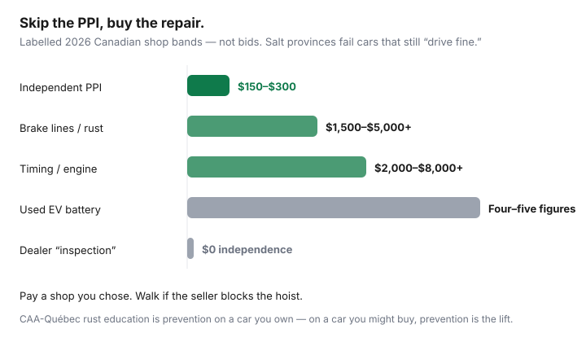

Transportation · Canada
How to book a pre-purchase inspection in Canada that actually protects you
Buyers skip a pre-purchase inspection to “save $200” and then inherit a rusted brake line or a battery that a dealer lot light never tested. A dealer “150-point inspection” is not independent. A friend with a code reader is not a hoist. In Canadian salt provinces the expensive surprises live underneath. This is how to book a PPI that can actually protect you — including EV extras — and how to use the paper to cut the price or leave.
Paper first: CARFAX Canada and, in Ontario, UVIP. Sequence: private-sale checklist. Price talk: out-the-door negotiation. Used EVs: Québec used-rebate context.
Disclosure: Independent shop directories are an offer type. Saving Optimizer may earn a commission if we later add partner links. We do not currently claim garage partnerships. This is not a mechanical warranty. Confirm what your booked shop will actually inspect.
Key takeaways
- Independent means you choose the shop and pay them. Dealer inspections and “my mechanic already looked” do not count.
- Budget $150–$300 for a typical used-car PPI; more if you need EV battery diagnostics. One missed repair is the $1,500+ example we use beside the UVIP/CARFAX stack.
- In Ontario, Québec, the Maritimes, and Prairie winters, specify underbody and frame — not a courtesy scan.
- Get findings in writing with photos. Use them to renegotiate or walk. Do not pay first and inspect after.
- EVs need high-voltage literacy. A general oil-change bay is the wrong hoist.
Why dealer “inspections” are not independent PPIs
A seller-commissioned inspection has a conflict even when the technician is honest: the customer is the person who wants the car sold. Certified pre-owned checklists can be real work and still omit the rust photo you needed. “Inspected by our team” on a used-lot windshield is marketing. Book a shop that will never see a commission on this VIN. Pay them yourself. Have the car towed or driven there; do not let the seller sit in the waiting room “to explain the noises.”
Seller scripts and the answer:
- “My mechanic already looked” — not independent.
- “It’s sold as-is” — as-is is why you inspect.
- “I don’t have time this week” — then you do not have a buyer this week.
- “The CPO certificate is better” — maybe on warranty; still not your hoist. See CPO vs private.
What a good PPI covers (compression, rust, electronics)
Ask for a written menu before you book. A useful Canadian used-car PPI usually includes:
- Hoist inspection: leaks, boots, exhaust, rust on structures and lines.
- Brakes and tires: measurements and date codes, not “they look fine.”
- Engine/transmission: cold start, leaks, compression or power-balance as appropriate, scan for stored and pending codes.
- Electronics: windows, HVAC, lights, ADAS cameras if equipped, evidence of water in trunks and tail-lights.
- Accident clues: panel gaps, weld marks, overspray, radiator support, airbag integrity.
- A plain-language “buy / buy with work / walk” and estimated repair bands — not a 40-page printout with no conclusion.
Compression or a leak-down test is worth asking for on higher-kilometre engines. A scan-only “PPI” at a quick-lube is a code reader with a invoice.
Rust belt realities: underbody and frame focus
CAA-Québec and every Canadian winter-driving explainer repeats the same physics: road salt and moisture eat unprotected metal. Québec, Ontario, the Maritimes, and many Prairie cities are rust belts even when the paint still shines. CAA-Québec’s rustproofing advice (consumer education) is about prevention on a car you already own. On a car you might buy, prevention is the hoist.
Tell the shop you care about: rocker sills, strut towers, frame rails, spare-tire well, brake and fuel lines, rear torsion-beam or subframe mounts, and whether rust is surface or structural. A $200 undercoating smell is not a clean bill. Fresh undercoating over scale is a walk. If the shop will not put the car in the air, pick another shop.

How to choose a shop and get written findings
- Pick an independent or dealer-service bay that does not have the car on the lot. Ask if they do PPIs for buyers and whether they will write.
- Send the VIN, year, and your rust/EV priorities in email. Ask the price and how long they keep the car.
- Attend if you can. Point at the noises. Do not narrate the seller’s story as fact.
- Leave with a written report, photos of the underbody, and a repair estimate range. Verbal “it’s pretty good” is not a document you can negotiate with.
- Pay the shop. Do not run the fee through the seller “for convenience.”
Canadian Tire, dealership service, and specialist independents can all be fine if they will hoist and write. A mobile inspector who cannot see the underbody in a snowbank is a winter limitation — book a real bay.
Using the report to renegotiate or walk away
Send the PDF. Ask for a price cut equal to the shop’s repair band, or for the seller to fix items at a shop you both name before purchase. Structural rust, flood clues, airbag faults, and odometer inconsistency are usually walks, not coupons. Cosmetic chips are a shrug. Mix: “$1,200 in brakes and tires I expected; $4,000 in subframe rust I did not — I am out.” Use that paper at a dealer desk the same way; add-ons do not repair rust. See negotiation tactics.
Cost of PPI vs cost of a bad purchase
| Spend | Typical band | What it buys |
|---|---|---|
| Independent PPI | $150–$300 | A written reason to buy, cut, or walk |
| Missed brake lines / rusted subframe | $1,500–$5,000+ | The “I saved the PPI” invoice |
| Timing / engine surprise | $2,000–$8,000+ | Why compression and leaks matter |
| Used EV battery pack | Four to five figures | Why a scan-only PPI is the wrong product |
Skip a PPI only on a token-priced parts car you already priced as scrap. A $9,000 family car is not that.
EV-specific inspection extras if applicable
Ask whether the shop can: read manufacturer battery state-of-health (not only a generic OBD dongle), inspect the charge port and cable pins, check heat-pump or cabin-heater operation, look for underbody pack damage from ice and ramps, and note software/recall campaigns. A range-test after a full charge is complementary, not a substitute. History + lien still apply. Federal EVAP does not apply to used EVs; do not let a rebate story rush you past the hoist. Québec used amounts are in the used EV guide.
Sources & date stamps
- Companion private-sale and CPO guides on this site — PPI $150–$300 band; UVIP $20; CARFAX Canada public prices Sep 2026.
- CAA-Québec consumer advice on rustproofing and rust prevention — rust-belt context, not a PPI spec. Reviewed 20 Sep 2026.
- Ontario.ca used-vehicle pages — UVIP and transfer sequence. Updated 17 Aug 2026.
Frequently asked questions
Is a dealer multi-point inspection the same as a PPI?
No. A dealer inspection is a sales document. An independent pre-purchase inspection is a shop you chose that does not sell the car, that puts it on a hoist, and that writes findings for you. Pay them directly.
How much does a PPI cost in Canada?
Independent shops commonly quote about $150–$300 for a used-car PPI in 2026 conversations on this site. EV or hybrid high-voltage health checks can run higher. Compare that to one missed rust or timing-chain repair.
What should a rust-belt PPI emphasize?
Underbody, frame rails, strut towers, brake and fuel lines, rear subframe, rocker sills, and evidence of accident repair — not just a code scan and a tire tread photo. Salt provinces fail cars that “drive fine.”
Can I use the PPI to renegotiate?
Yes. Written findings with photos are a price cut or a walk. Do not verbally “split the difference” on a structural rust call. Get the shop’s “would you let a family member buy this” in writing.
What extra should I ask for on a used EV?
A shop that can read high-voltage battery health, charger-port condition, heat-pump or resistive-heat operation in the cold, and software recalls — not only brake pads. Pair it with a history report and the correct incentive rules; federal EVAP is new vehicles only.